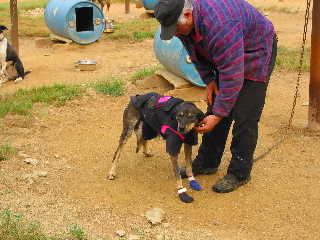

Day 4 — 2004/08/17
This morning, we went to the Redington Jr's place, He is the son of the Redington that started the Iditarod dog race. However, Redington Jr. mostly does sprint races instead of indurence racing.
That afternoon, we canoed up the Manley sloo. Erling and I took off
on a odd fork instead of keeping to the main stream. When we got to the
end of it, we turned back, and went to catch up with the others. When we
did, we tried to convince the others that the sloo was really a big circle and
we had lapped them. ^_^ No one bought it.
That night I headed off to the hot spring that we rented time at the
hot spring located in Manley. This hot spring is inside of a green
house, so the couple of tubs are surrounded with all sorts of hot
weather type plants. It looked very neat. There were three tubs: hot,
hotter, and can–cook–meat. I stuck to the hot one, as it
felt most like a ‘regular’ hot tub. (Being bearable
to sit in for any length of time had something to do with it
too.)